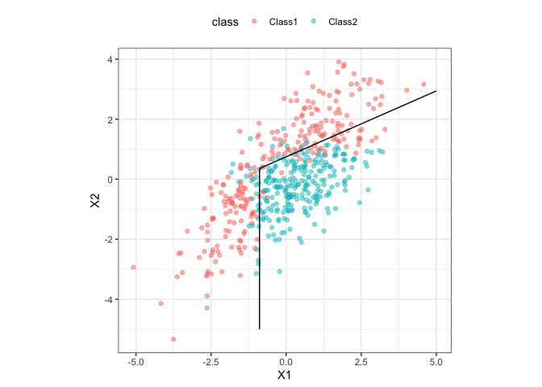

discrim contains simple bindings to enable the parsnip package to fit various discriminant analysis models, such as
- Linear discriminant analysis (LDA, simple and regularized)
- Quadratic discriminant analysis (QDA, simple and regularized)
- Regularized discriminant analysis (RDA, via Friedman (1989))
- Flexible discriminant analysis (FDA) using MARS features
- Naive Bayes models
Installation
You can install the released version of discrim from CRAN with:
install.packages("discrim")And the development version from GitHub with:
# install.packages("pak")
pak::pak("tidymodels/discrim")Available Engines
The discrim package provides engines for the models in the following table.
| model | engine | mode |
|---|---|---|
| discrim_flexible | earth | classification |
| discrim_linear | MASS | classification |
| discrim_linear | mda | classification |
| discrim_linear | sda | classification |
| discrim_linear | sparsediscrim | classification |
| discrim_quad | MASS | classification |
| discrim_quad | sparsediscrim | classification |
| discrim_regularized | klaR | classification |
| naive_Bayes | klaR | classification |
| naive_Bayes | naivebayes | classification |
Example
Here is a simple model using a simulated two-class data set contained in the package:
library(discrim)
parabolic_grid <-
expand.grid(X1 = seq(-5, 5, length = 100),
X2 = seq(-5, 5, length = 100))
fda_mod <-
discrim_flexible(num_terms = 3) %>%
# increase `num_terms` to find smoother boundaries
set_engine("earth") %>%
fit(class ~ ., data = parabolic)
parabolic_grid$fda <-
predict(fda_mod, parabolic_grid, type = "prob")$.pred_Class1
library(ggplot2)
ggplot(parabolic, aes(x = X1, y = X2)) +
geom_point(aes(col = class), alpha = .5) +
geom_contour(data = parabolic_grid, aes(z = fda), col = "black", breaks = .5) +
theme_bw() +
theme(legend.position = "top") +
coord_equal()
Contributing
This project is released with a Contributor Code of Conduct. By contributing to this project, you agree to abide by its terms.
For questions and discussions about tidymodels packages, modeling, and machine learning, please post on RStudio Community.
If you think you have encountered a bug, please submit an issue.
Either way, learn how to create and share a reprex (a minimal, reproducible example), to clearly communicate about your code.
Check out further details on contributing guidelines for tidymodels packages and how to get help.